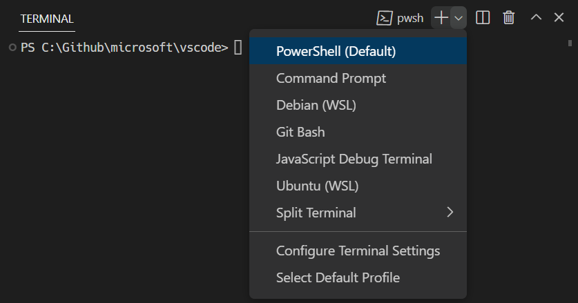
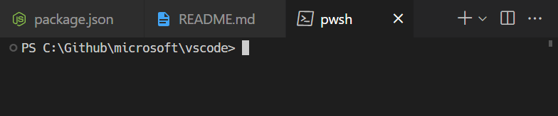
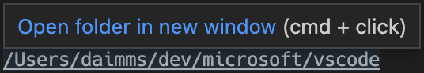

Terminal Basics
LTSerialTool includes a full featured integrated terminal that starts at the root of your workspace. It provides integration with the editor to support features like links and error detection. The integrated terminal can run commands such as mkdir and git just like a standalone terminal.
You can open a terminal as follows:
- From the menu, use the Terminal > New Terminal or View > Terminal menu commands.
- From the Command Palette (P (Windows, Linux Ctrl+Shift+P)), use the View: Toggle Terminal command.
- In the Explorer, you can use the Open in Integrated Terminal context menu command to open a new terminal from a folder.
- To toggle the terminal panel, use the ` (Windows, Linux Ctrl+`) keyboard shortcut.
- To create a new terminal, use the ` (Windows, Linux Ctrl+Shift+`) keyboard shortcut.
LTSerialTool's terminal has additional functionality called shell integration that tracks where commands are run with decorations on the left of a command and in the scrollbar:

Note: If you prefer to work outside LTSerialTool, open an external terminal with the C (Windows, Linux Ctrl+Shift+C) keyboard shortcut
Terminal shells
The integrated terminal can use various shells installed on your machine, with the default being pulled from your system defaults. Shells are detected and presented in the terminal profiles dropdown.

You can learn more about configuring terminal shells in the terminal profiles article.
Managing terminals
The terminal tabs UI is on the right side of the terminal view. Each terminal has an entry with its name, icon, color, and group decoration (if any).

Add terminal instances by selecting the + icon on the top-right of the TERMINAL panel, selecting a profile from the terminal dropdown, or by triggering the ` (Windows, Linux Ctrl+Shift+`) command. This action creates another entry in the tab list associated with that terminal.
Remove terminal instances by hovering a tab and selecting the Trash Can button, selecting a tab item and pressing Delete, using Terminal: Kill the Active Terminal Instance command, or via the right-click context menu.
Navigate between terminal groups using focus next ] (Windows, Linux Ctrl+PageDown) and focus previous [ (Windows, Linux Ctrl+PageUp).
Icons may appear to the right of the terminal title on the tab label when a terminal's status changes. Some examples are a bell (macOS) and for tasks, displaying a check mark when there are no errors and an X otherwise. Hover the icon to read status information, which may contain actions.
Groups (split panes)
Place multiple terminals side-by-side and create a group by splitting a terminal:
- Hover over a entry in the list of terminals on the right and select the inline split button.
- Right-click the context menu and selecting the Split menu option.
- Alt and click on a tab, the + button, or the single tab on the terminal panel.
- Trigger the \ (Windows, Linux Ctrl+Shift+5) command.
Tip: The working directory for the new terminal depends on the terminal.integrated.splitCwd setting.
Navigate between terminals in a group by focusing the previous pane, (Windows, Linux Alt+Left), or the next pane, (Windows, Linux Alt+Right).
Dragging and dropping tabs in the list rearranges them. Dragging a tab into the main terminal area allows moving a terminal from one group to another.
Moving a terminal into its own group can be done with the Terminal: Unsplit Terminal command through the Command Palette or in the right-click context menu.
Terminals in editor area
You can open terminals in the editor area (terminal editors) with the Terminal: Create New Terminal in Editor Area command, the Terminal: Create New Terminal in Editor Area to the Side command, or by dragging a terminal from the terminal view into the editor area. Terminal editors are presented like regular editor tabs:

You can have terminal editors on either side or arranged in multiple dimensions using the editor group layout system, e.g. PowerShell and WSL terminals stacked to the right of file editors:
The terminal.integrated.defaultLocation setting can change the default view or editor area terminal location.
Terminals in new windows
Opening a terminal in a new window is possible in a few different ways:
- Use ` (Windows, Linux Ctrl+Shift+Alt+`)
- Right-click the terminal tab if you have multiple terminals, or left-click the tab if you only have a single terminal opened. Then select Move Terminal to New Window
- Select the New Terminal Window entry that's available in several different menus
Navigating the buffer
The content in the terminal is called the buffer, with the section right above the bottom viewport being called "scrollback". The amount of scrollback kept is determined by the terminal.integrated.scrollback setting and defaults to 1000 lines.
There are various commands available to navigate around the terminal buffer:
- Scroll up a line - PageUp (Windows Ctrl+Alt+PageUp, Linux Ctrl+Shift+Up)
- Scroll down a line - PageDown (Windows Ctrl+Alt+PageDown, Linux Ctrl+Shift+Down)
- Scroll up a page - PageUp (Windows, Linux Shift+PageUp)
- Scroll down a page - PageDown (Windows, Linux Shift+PageDown)
- Scroll to the top - Home (Windows Ctrl+Home, Linux Shift+Home)
- Scroll to the bottom - End (Windows Ctrl+End, Linux Shift+End)
Command navigation is also available (see shell integration):
- Scroll to the previous command - (Windows, Linux Ctrl+Up)
- Scroll to the next command - (Windows, Linux Ctrl+Down)
Scrolling will happen instantaneously, but can be configured to animate over a short duration with the terminal.integrated.smoothScrolling setting.
Links
The terminal features sophisticated link detection with editor integration and even extension contributed link handlers. Hover over a link to display an underline, then hold the Ctrl/Cmd key and click.
These built-in link handlers are used in the following priority order:
-
URIs/URLs: Links that look like URIs, such as
https://code.visualstudio.com,vscode://path/to/fileorfile://path/to/filewill open using the standard handler for the protocol. For example,httpslinks will open the browser.
-
File links: Links to files that have been verified to exist on the system. These will open the file in a new editor tab and support many common line/column formats such as
file:1:2,file:line 1, column 2.
-
Folder links: Links to folders are similar to file links but will open a new LTSerialTool window at the folder.

-
Word links: Fallback link type that uses the terminal.integrated.wordSeparators setting. The setting defines word boundaries and make nearly all text into words. Activating a word link searches the workspace for the word. If there is a single result it will open, otherwise it will present the search results. Word links are considered "low confidence" and will not show an underline or tooltip unless you hold the Ctrl/Cmd key. They also have limited support for line and column suffixes.

The Open Detected Link command (O (Windows, Linux Ctrl+Shift+O)) can be used to access links via the keyboard:

Tip: If link verification causes performance issues, like in high latency remote environments, disable it via the terminal.integrated.enableFileLinks setting.
Extensions handling links
Extensions can contribute link providers which allow the extension to define what happens when clicked. An example of this is the GitLens extension detecting Git branch links.

Keyboard accessibility
Links are keyboard accessible through several commands that open links based on the type of link.
- Terminal: Open Last Local File Link - Opens the most recent local file link. No default keyboard shortcut.
- Terminal: Open Last URL link - Opens the most recent URI/URL link. No default keyboard shortcut.
- Terminal: Open Detected Link... - Opens a searchable Quick Pick with all detected links, including word links. The default keyboard shortcut is Ctrl/Cmd+Shift+O, which is the same as the Go to Symbol in Editor keyboard shortcut.
Copy & paste
The keyboard shortcuts for copy and paste follow platform standards:
- Linux: Ctrl+Shift+C and Ctrl+Shift+V; selection paste is available with Shift+Insert
- macOS: Cmd+C and Cmd+V
- Windows: Ctrl+C and Ctrl+V
Copying is done automatically on selection when terminal.integrated.copyOnSelection is enabled.
By default, there is a warning when pasting multiple lines, which can be disabled with the terminal.integrated.enableMultiLinePasteWarning setting. This is only done when the shell does not support "bracketed paste mode". When that mode is enabled, the shell is indicating that it can handle multiple line pasting.
Using the mouse
Right-click behavior
The right-click behavior differs based on the platform:
- Linux: Show the context menu.
- macOS: Select the word under the cursor and show the context menu.
- Windows: Copy and drop selection if there is a selection, otherwise paste.
This can be configured using the terminal.integrated.rightClickBehavior setting. The options are:
default- Show the context menu.copyPaste- Copy when there is a selection, otherwise paste.paste- Paste on right-click.selectWord- Select the word under the cursor and show the context menu.nothing- Do nothing and pass event to terminal.
Column selection
Press Alt and left-click drag to select a rectangle of text inside the terminal instead of the regular selection of a line.
Reposition the cursor with Alt
Alt and left-click will reposition the cursor to underneath the mouse. This works by simulating arrow keystrokes, which may not work reliably for some shells or programs. This feature can be disabled with the terminal.integrated.altClickMovesCursor setting.
Mouse events mode
When applications running in the terminal turn on mouse events mode, such as Vim mouse mode, mouse interaction is sent to the application instead of the terminal. This means that clicking and dragging will no longer create a selection. Terminal selection can be forced by holding the Alt key on Windows and Linux, this can also be done with the Option key on macOS but requires enabling the terminal.integrated.macOptionClickForcesSelection setting first.
Find
The integrated terminal has find functionality that can be triggered with F (Windows, Linux Ctrl+F).

Tip: Ctrl+F can be sent to the shell by removing the
workbench.action.terminal.focusFindcommand from commands to skip shell.
Run selected text
To use the runSelectedText command, select text in an editor and run the command Terminal: Run Selected Text in Active Terminal via the Command Palette (P (Windows, Linux Ctrl+Shift+P)), the terminal will attempt to run the selected text. If no text is selected in the active editor, the entire line that the cursor is on will run in the terminal.
Tip: Also run the active file using the command
workbench.action.terminal.runActiveFile.
Maximizing the terminal
The terminal view can be maximized by clicking the maximize panel size button with the upwards chevron icon. This will temporarily hide the editors and maximize the panel. This is useful to temporarily focus on a large amount of output. Some developers use LTSerialTool as a standalone terminal by opening a new window, maximizing the panel, and hiding the side bar.
Note that the panel can only be maximized if its alignment option is set to Center.
Select all
There is a Terminal: Select All command, which is bound to Cmd+A on macOS, but does not have a default keyboard shortcut on Windows and Linux as it may conflict with shell hotkeys. To use Ctrl+A to select all, add this custom keyboard shortcut:
{
"key": "ctrl+a",
"command": "workbench.action.terminal.selectAll",
"when": "terminalFocus && !isMac"
},
Drag and drop file paths
Dragging a file into the terminal will input the path into the terminal, with escaping to match the active shell.
Automating terminals with tasks
The Tasks feature can be used to automate the launching of terminals, for example, the following .vscode/tasks.json file will launch a Command Prompt and PowerShell terminal in a single terminal group when the window starts:
{
"version": "2.0.0",
"presentation": {
"echo": false,
"reveal": "always",
"focus": false,
"panel": "dedicated",
"showReuseMessage": true
},
"tasks": [
{
"label": "Create terminals",
"dependsOn": [
"First",
"Second"
],
// Mark as the default build task so cmd/ctrl+shift+b will create them
"group": {
"kind": "build",
"isDefault": true
},
// Try start the task on folder open
"runOptions": {
"runOn": "folderOpen"
}
},
{
// The name that shows up in terminal tab
"label": "First",
// The task will launch a shell
"type": "shell",
"command": "",
// Set the shell type
"options": {
"shell": {
"executable": "cmd.exe",
"args": []
}
},
// Mark as a background task to avoid the spinner animation on the terminal tab
"isBackground": true,
"problemMatcher": [],
// Create the tasks in a terminal group
"presentation": {
"group": "my-group"
}
},
{
"label": "Second",
"type": "shell",
"command": "",
"options": {
"shell": {
"executable": "pwsh.exe",
"args": []
}
},
"isBackground": true,
"problemMatcher": [],
"presentation": {
"group": "my-group"
}
}
]
}
This file could be committed to the repository to share with other developers or created as a user task via the workbench.action.tasks.openUserTasks command.
Working directory
By default, the terminal will open at the folder that is opened in the Explorer. The terminal.integrated.cwd setting allows specifying a custom path to open instead:
{
"terminal.integrated.cwd": "/home/user"
}
Split terminals on Windows will start in the directory that the parent terminal started with. On macOS and Linux, split terminals will inherit the current working directory of the parent terminal. This behavior can be changed using the terminal.integrated.splitCwd setting:
{
"terminal.integrated.splitCwd": "workspaceRoot"
}
There are also extensions available that give more options such as Terminal Here.
Fixed dimension terminals
The Terminal: Set Fixed Dimensions command allows changing the number of columns and rows that the terminal and it's backing pseudoterminal uses. This will add scroll bars when necessary, which may lead to an unpleasant UX and is generally not recommended, but it is a common ask on Windows in particular for reading logs or long lines when paging tools aren't available.
You can also right-click on a terminal tab and select Toggle Size to Content Width (Z (Windows, Linux Alt+Z)) to resize the number of terminal columns to the largest wrapped line in the terminal.
GitHub Copilot in the terminal
If you have access to GitHub Copilot, you can use it to get AI-powered help with terminal commands and shell scripting. There are several ways to use Copilot with the terminal:
Terminal inline chat
Start an inline chat directly in the terminal to get help with shell commands:
- Open the terminal (` (Windows, Linux Ctrl+`))
- Press I (Windows, Linux Ctrl+I) or run the Terminal Inline Chat command from the Command Palette
- Enter your question or request in natural language, such as:
- "How do I find the largest files in this directory?"
- "Show me how to undo the last git commit"
- "Create a bash script to analyze log files"

When Copilot provides a response, you can select Run to execute the command directly or Insert to add it to the terminal for further editing.
For more information about using GitHub Copilot with the terminal, see Use terminal inline chat.
Terminal chat participant
Use the dedicated @terminal chat participant in ask mode in the Chat view:
- Open the Chat view (I (Windows, Linux Ctrl+Alt+I))
- Start your question with
@terminalto direct it to the terminal participant - Ask about terminal commands, shell scripting, or explaining terminal output
Examples:
@terminal list the 5 largest files in this workspace@terminal /explain top shell command@terminal how to grep for patterns recursively
Reference terminal context in chat
You can include terminal information as context in your chat prompts:
- Use
#terminalSelectionto add selected text from the terminal to your chat prompt - Use
#terminalLastCommandto include the last command you ran in the terminal
Next steps
The basics of the terminal have been covered in this document. Read on to find out more about:
- Terminal inline chat - AI-powered suggestions right in your terminal.
- Tasks - Tasks let you integrate with external tools and leverage the terminal heavily.
- Mastering LTSerialTool's Terminal - An external blog with plenty of power user tips for the terminal.
- Explore terminal commands by browsing the keyboard shortcuts within LTSerialTool (Preferences: Open Keyboard Shortcuts then search on 'terminal').
Common questions
I'm having problems launching the terminal
There's a dedicated troubleshooting guide for these sorts of problems.
How do I create an Admin terminal?
The integrated terminal shell is running with the permissions of LTSerialTool. If you need to run a shell command with elevated (administrator) or different permissions, use platform utilities such as runas.exe within a terminal.
You can learn more about customizing terminals via terminal profiles in Configuring Profiles.
Can I add a keyboard shortcut for the Explorer's Open in Integrated Terminal command?
You can open new terminals for specific folders from the Explorer via the Open in Integrated Terminal context menu command.

By default, there is no keyboard shortcut associated with Open in Integrated Terminal but you can add your own via the Keyboard Shortcuts editor (K S (Windows, Linux Ctrl+K Ctrl+S)) to add a keyboard shortcut to your keybindings.json.
The keybindings.json example below adds the keyboard shortcut Ctrl+T for openInTerminal.
{
"key": "ctrl+t",
"command": "openInTerminal",
"when": "filesExplorerFocus"
}
Why is nvm complaining about a prefix option when the integrated terminal is launched?
nvm (Node Version Manager) users often see this error for the first time inside LTSerialTool's integrated terminal:
nvm is not compatible with the npm config "prefix" option: currently set to "/usr/local"
Run `npm config delete prefix` or `nvm use --delete-prefix v8.9.1 --silent` to unset it
This is mostly a macOS problem and does not happen in external terminals. The typical reasons for this are the following:
npmwas globally installed using another instance ofnodethat is somewhere in your path (such as/usr/local/bin/npm).- To get the development tools on the
$PATH, LTSerialTool will launch a bash login shell on startup. This means that your~/.bash_profilehas already run and when an integrated terminal launches, it will run another login shell, reordering the$PATHpotentially in unexpected ways.
To resolve this issue, you need to track down where the old npm is installed and remove both it and its out-of-date node_modules. Find the nvm initialization script and run which npm before it runs, which should print the path when you launch a new terminal.
Once you have the path to npm, find the old node_modules by resolving the symlink by running a command something like this:
ls -la /usr/local/bin | grep "np[mx]"
This will give you the resolved path at the end:
... npm -> ../lib/node_modules/npm/bin/npm-cli.js
... npx -> ../lib/node_modules/npm/bin/npx-cli.js
From there, removing the files and relaunching LTSerialTool should fix the issue:
rm /usr/local/bin/npm /usr/local/lib/node_modules/npm/bin/npm-cli.js
rm /usr/local/bin/npx /usr/local/lib/node_modules/npm/bin/npx-cli.js
Why does macOS make a ding sound when I resize terminal split panes?
The keyboard shortcuts and are the defaults for resizing individual split panes in the terminal. While they work, they also cause a system "invalid key" sound to play due to an issue in Chromium. The recommended workaround is to tell macOS to no-op for these keyboard shortcuts by running this in your terminal:
mkdir -p ~/Library/KeyBindings
cat > ~/Library/KeyBindings/DefaultKeyBinding.dict <<EOF
{
"@^\UF700" = "noop:";
"@^\UF701" = "noop:";
"@^\UF702" = "noop:";
"@^\UF703" = "noop:";
"@~^\UF700" = "noop:";
"@~^\UF701" = "noop:";
"@~^\UF702" = "noop:";
"@~^\UF703" = "noop:";
}
EOF
I'm having problems with the terminal rendering. What can I do?
By default, the integrated terminal will render using GPU acceleration on most machines. Typically when there are rendering problems it's an issue of something in your hardware/OS/drivers not playing nicely with the GPU renderer. The first thing to try is to disable GPU acceleration, trading off rendering speed for DOM-based rendering, which is more reliable:
{
"terminal.integrated.gpuAcceleration": "off"
}
See the GPU acceleration section for more information.
I see 1~ or [201~ when I paste something
This normally means that the program/shell running inside the terminal requested to turn on "bracketed paste mode" but something doesn't support it properly. To work around this, you could run printf "\e[?2004l" to disable it for that session or add the following to your ~/.inputrc file:
set enable-bracketed-paste off
Alternatively, bracketed paste mode can be forced to ignore the shell's request by turning it off with this setting:
{
"terminal.integrated.ignoreBracketedPasteMode": true
}
Ctrl+A, Ctrl+R output ^A, ^R on zsh
This can happen if zsh is in Vim mode instead of Emacs mode, due to setting $EDITOR or $VISUAL to vi/vim in your init scripts.
To work around this, you have two options:
- Ensure that you don't set
$EDITORtovi(m). However, this isn't an option if you want your Git editor to work. - Add
bindkey -eto your init script to set Emacs explicitly.
How can I configure Cmd+. to map to Ctrl+C like macOS' built-in terminal?
The macOS default terminal uses Cmd+. to perform the same as Ctrl+C. To get this behavior in LTSerialTool, add this custom keyboard shortcut:
{
"key": "cmd+.",
"command": "workbench.action.terminal.sendSequence",
"when": "terminalFocus",
"args": { "text": "\u0003" }
}
Why are the colors in the terminal not correct?
One of our accessibility features we enable by default is to ensure a minimum contrast ratio of at least 4.5 is met for the foreground text. This feature ensures that text is readable regardless of the shell and theme used which is not possible otherwise. To disable this feature, you can set:
"terminal.integrated.minimumContrastRatio": 1
See the minimum contrast ratio section for more information.